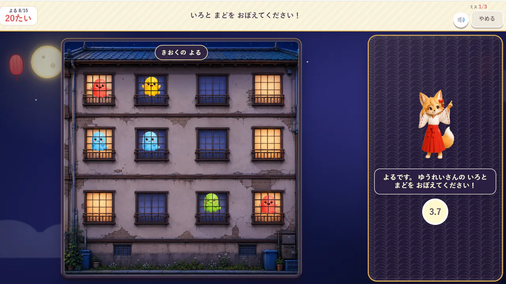

このゲームについて
夜のアパートに現れる幽霊の色と窓の場所を覚え、朝になったら同じ場所へお札を貼ります。見た情報をいったん覚えてから探す遊びです。
遊び方
夜の画面で幽霊の色と位置を確認します。朝の画面に変わったら、覚えている窓を見つけて順に選びます。
ゲーム中に行うこと
- 色と場所を覚える
- 覚えた場所を画面から見つける
ここではゲーム中の活動を説明しています。能力の向上や、特定の効果・改善を保証するものではありません。

夜のアパートに現れる幽霊の色と窓の場所を覚え、朝になったら同じ場所へお札を貼ります。見た情報をいったん覚えてから探す遊びです。
夜の画面で幽霊の色と位置を確認します。朝の画面に変わったら、覚えている窓を見つけて順に選びます。
ここではゲーム中の活動を説明しています。能力の向上や、特定の効果・改善を保証するものではありません。